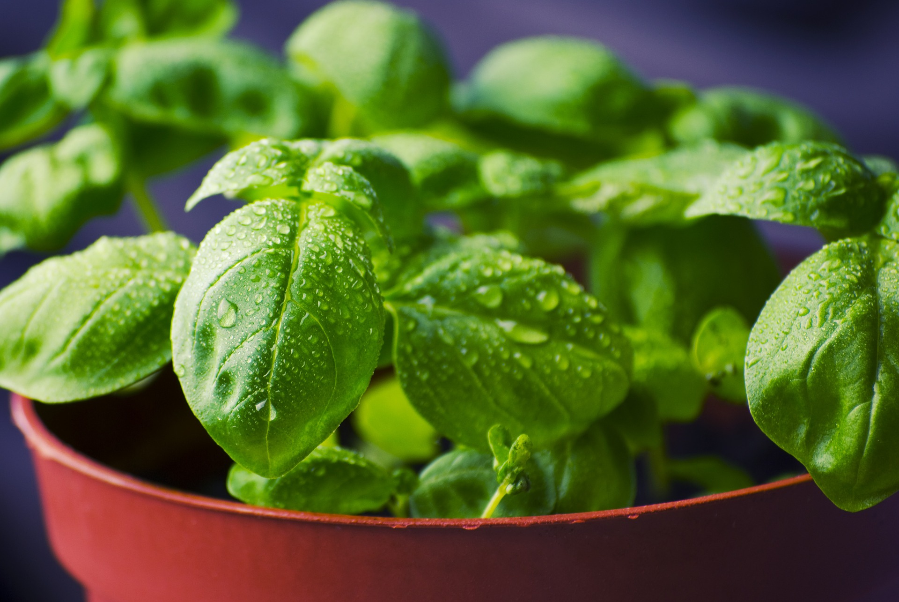
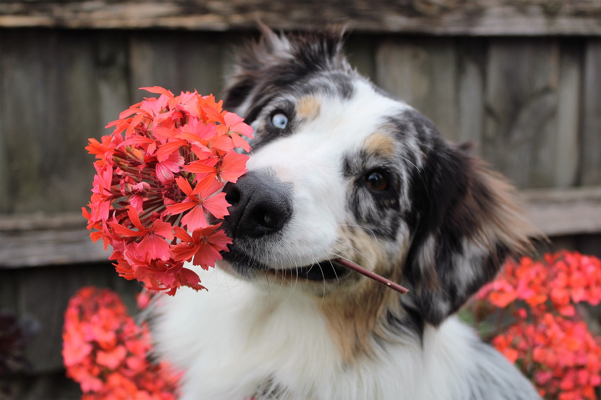

Pet Friendly Houseplants
Non-toxic houseplants
(hover for more info)
Money Tree Facts and Care
Prayer Plant See Prayer Plant facts and care
Boston Fern Facts and Care
Cast Iron Plant See Cast Iron facts and care
African Violet Facts and Care
Ponytail Palm See Ponytail Palm facts and care
Orchid
 Facts and Care
Facts and Care
Spider Plant See Spider Plant facts and care
Bromelaid Facts and Care
Air Plant Facts and Care
Christmas Cactus Facts and Care
Basil  Facts and Care
 Key Notes
Just because a houseplant is non-toxic to your pet, it doesn't mean it won't cause digestive upset if eaten.
They can still cause stomach cramps, diarrhea and other intestinal problems, so it's always best to try and keep any plant away from your pets. Most smaller plants can
be kept in a hanging basket which is a great option.
Remember: Just because the plant is safe for pets, does not mean the pets are "safe" for the plant.
Information retrieved from https://typicallytopical.com/pet-friendly-house-plants/ March 2021